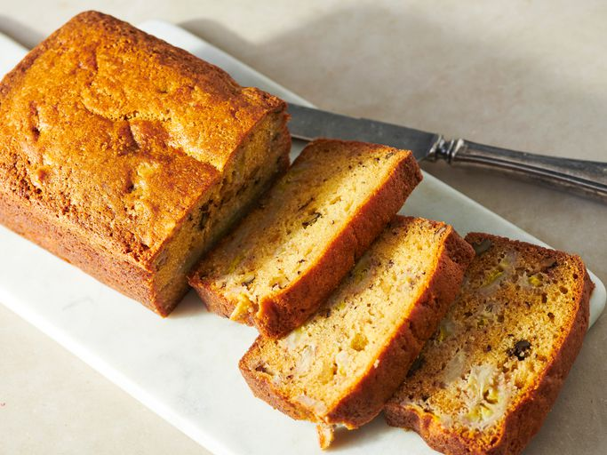
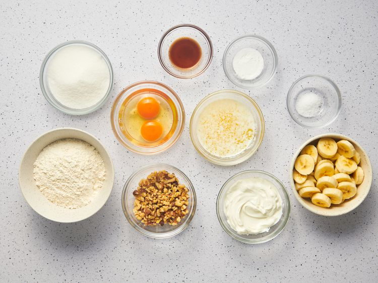
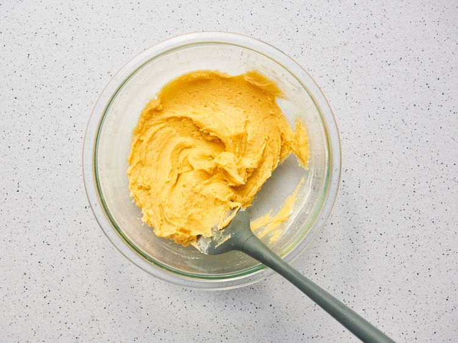
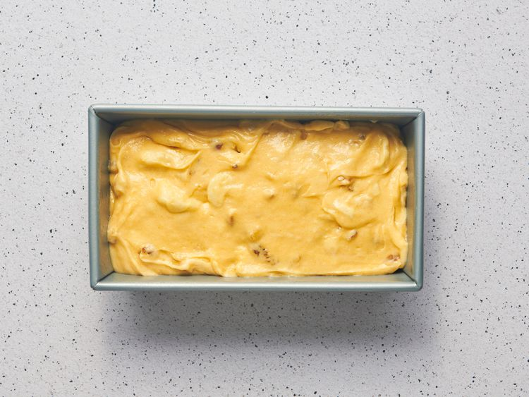
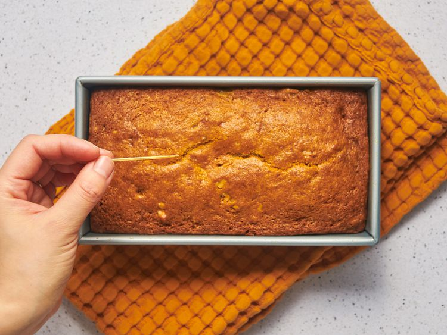
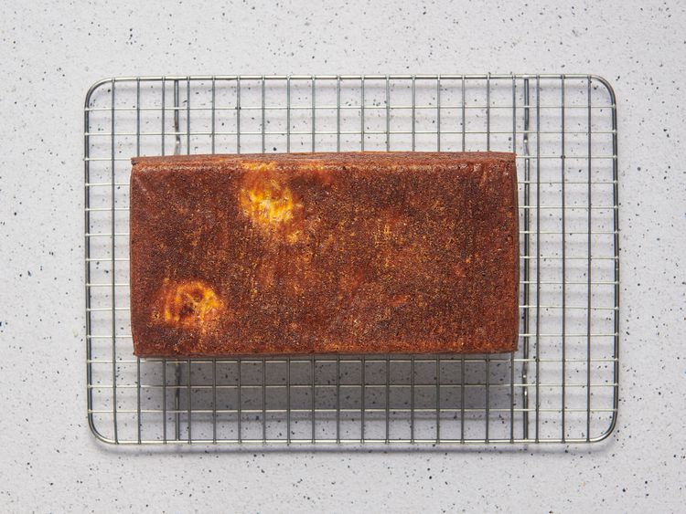

Banana Bread

Looking for a moist banana bread recipe that never fails? Your friends and family will ask for this never-dry banana bread again and again.
Ingredients
- 1 cup white sugar
- 1/2 cup butter, melted
- 2 eggs
- 1 teaspoon vanilla extract
- 1 1/2 cups all-purpose flour
- 1 teaspoon baking soda
- 1/2 teaspoon salt
- 1/2 cup sour cream
- 1/2 cup chopped walnuts
- 2 medium bananas, sliced
Directions
Step 1
- Gather all ingredients. Preheat the oven 350 degrees F (175 degrees C). Grease a 9x5-inch loaf pan.

Step 2
- Stir sugar and melted butter together in a large bowl. Add eggs and vanilla; mix well. Combine flour, baking soda, and salt; stir into butter mixture until smooth.

Step 3
- Fold in banana slices, sour cream, and walnuts; transfer into the prepared pan.

Step 4
- Bake in the preheated oven until a toothpick inserted into the center of the loaf comes out clean, about 1 hour.

Step 5
- Cool loaf in pan for 10 minutes before inverting onto a wire rack to cool completely.

Step 6
- Serve and enjoy!